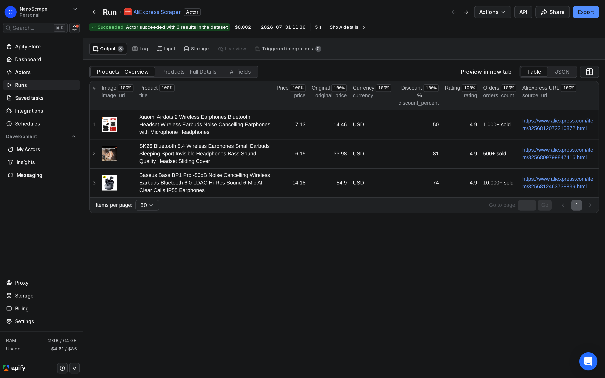
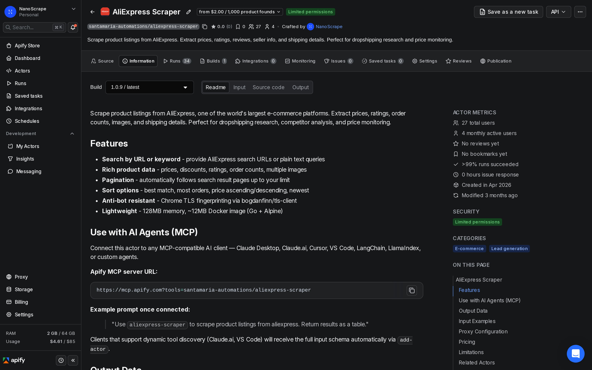
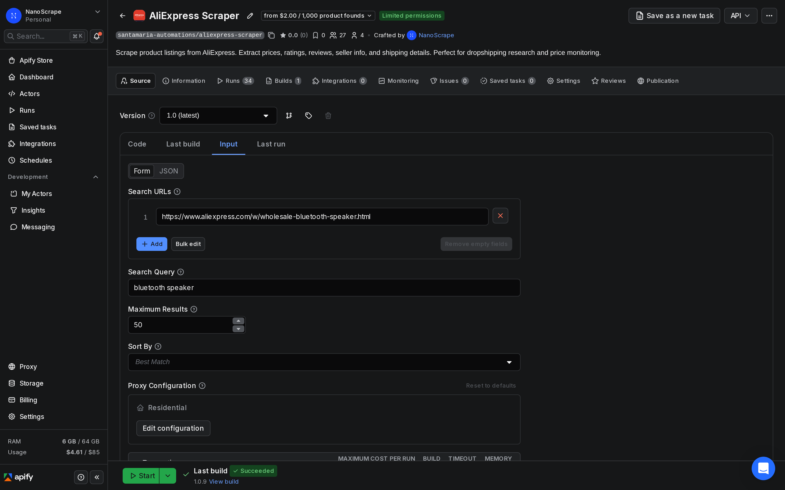
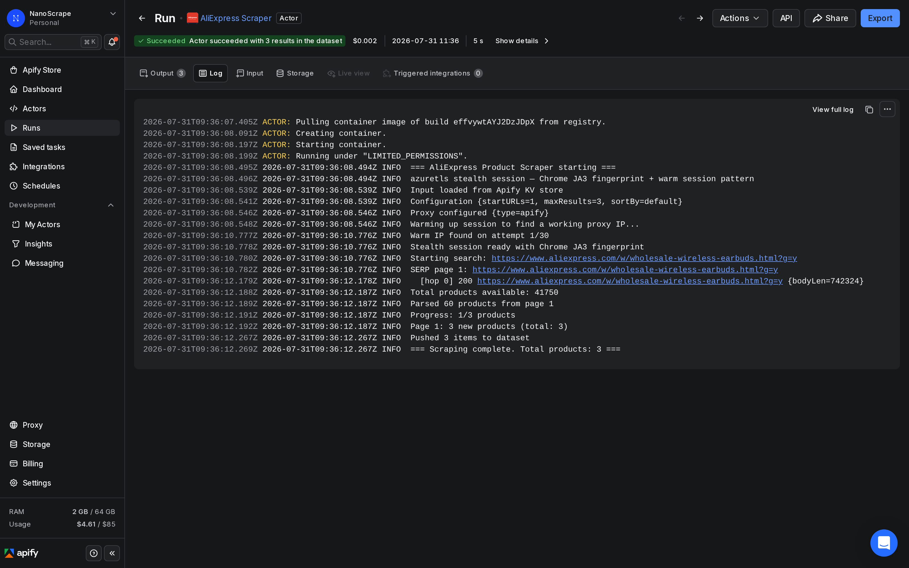
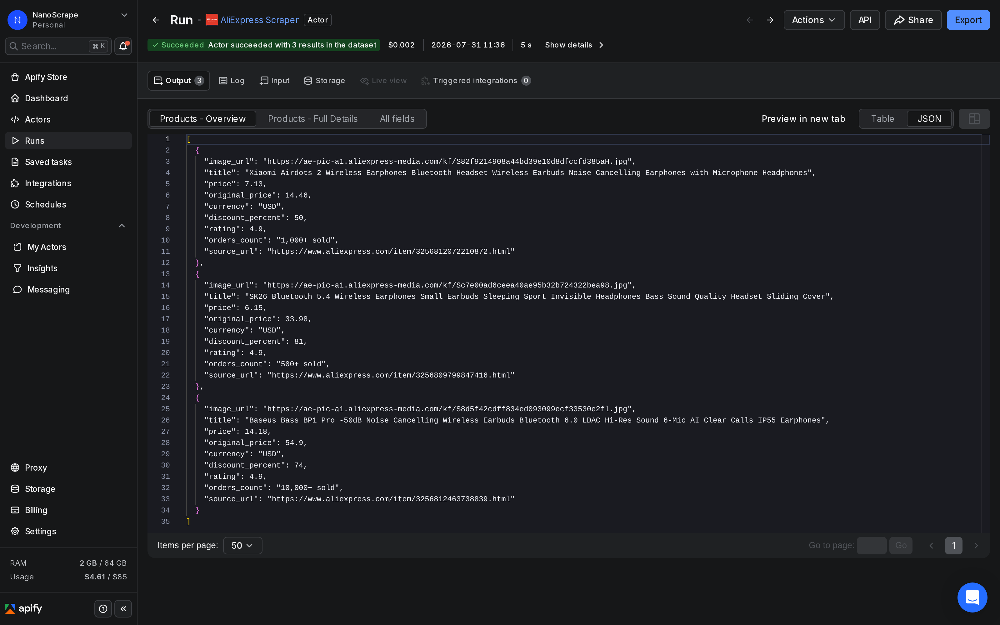

How to Scrape AliExpress Product Listings for Dropshipping Research
AliExpress does not offer a public API for bulk product data. If you want prices, order counts, discount percentages, and images across hundreds of listings, you are left clicking through pages manually or paying for a third-party data broker. This tutorial shows a faster path: a pay-per-result scraper on Apify that extracts all of that in one run for about $2 per 1,000 products. No login, no API key, and no monthly subscription.

In this tutorial
What you get
The NanoScrape AliExpress Scraper runs on Apify and accepts either plain keyword searches or direct AliExpress search page URLs. It paginates automatically and pushes every product it finds to a downloadable dataset. No AliExpress account and no API key required.
- Keyword mode: give it a search term like "bluetooth speaker" and it returns the matching product listings with all available metadata.
- URL mode: paste an AliExpress search or category page URL to reproduce a specific filtered or sorted view.
- Mixed input: combine multiple keywords and URLs in the same run. Each result includes a
source_urlfield so you can trace it back.
Per-product fields include current price, original price, discount percentage, currency, star rating, order count, primary image URL, a full image URL array, shipping info, free shipping flag, and a direct link to the product page. Store name, store URL, and store rating are only available when scraping individual product detail pages, not from search results.
Prerequisites
- A free Apify account. The free tier gives you $5 of usage credit every month, enough to pull about 2,500 product listings.
- One or more AliExpress search keywords or search page URLs to scrape.
Open the actor and sign up
- Open the NanoScrape AliExpress Scraper on Apify.
- Click Try for free. Sign up with Google or email. The free tier includes $5 of monthly credit, enough to test without entering a payment method.
- Once signed in, click Try for free again on the actor page. The Apify Console opens with the input form ready to configure.

Set your search input
The actor accepts two types of input. Use searchQuery for a plain keyword search, or searchUrls for direct AliExpress search and category page URLs. You can supply one or the other, or both at the same time.
Keyword search
Enter a product category or search term in the Search Query field. The actor runs that search on AliExpress and paginates through results until it reaches maxResults.
{
"searchQuery": "wireless earbuds",
"maxResults": 100,
"sortBy": "orders"
}URL search
If you already have a filtered AliExpress search URL from a manual browse session, paste it into Search URLs. This is useful when you want to preserve a specific category, price range filter, or shipping option.
{
"searchUrls": [
"https://www.aliexpress.com/w/wholesale-solar-panel.html",
"https://www.aliexpress.com/w/wholesale-usb-cable.html"
],
"maxResults": 200
}
maxResults before you run. Each additional page yields roughly 60 products. Leaving it at the default of 100 is a safe starting point for a test run.Configure proxy and options
AliExpress has active bot detection. The scraper uses Chrome TLS fingerprinting to mimic a real browser, but residential proxy is strongly recommended to avoid CAPTCHAs and intermittent blocks. Datacenter proxies may work in short bursts but tend to fail on sustained runs.
{
"searchQuery": "bluetooth speaker",
"maxResults": 100,
"proxyConfiguration": {
"useApifyProxy": true,
"apifyProxyGroups": ["RESIDENTIAL"]
}
}You can also pass a sortBy value to control the order AliExpress returns results in. See the sort options section below for available values.
Run and download results
- Click Start in the top-right corner of the input form.
- The run opens in a new tab. Watch the Log tab for progress. A 100-product run typically completes in under two minutes.
- When status shows Succeeded, click the Dataset tab to preview results in a table.
- Click Export to download as JSON, CSV, XML, or Excel. The JSON format preserves all nested fields like the image URL array.

Sort options
The sortBy field controls the order AliExpress returns search results. Choosing the right sort is especially important for dropshipping research, where you usually want the highest-demand products first.
"orders": most orders first. Best for validating product demand before sourcing."price_asc": cheapest products first. Useful when you are looking for the lowest-cost sourcing option."price_desc": most expensive first. Good for identifying premium positioning opportunities."newest": most recently listed products first. Useful for trend scouting and spotting new supplier additions.- Omit
sortByentirely (or set it to"default") to use AliExpress best-match ranking, which blends relevance, sales velocity, and seller rating.
{
"searchQuery": "phone case",
"maxResults": 200,
"sortBy": "orders",
"proxyConfiguration": {
"useApifyProxy": true,
"apifyProxyGroups": ["RESIDENTIAL"]
}
}Field reference
Every product returned from a search results page includes the following fields. Store-level fields (store name, URL, and rating) are only populated when scraping individual product detail pages.
id: AliExpress product ID.title: full product title as shown on AliExpress.price: current or sale price as a number.original_price: pre-discount price, if a discount is active.currency: currency code for price fields (e.g.USD,EUR).discount_percent: percentage discount off the original price.rating: star rating from 0 to 5 (null if no reviews yet).review_count: total review count (null on search results pages; available on detail pages).orders_count: orders sold string as shown on AliExpress, e.g."2,000+ sold".store_name: seller store name (detail-page only).store_url: link to the seller's AliExpress store (detail-page only).store_rating: seller feedback score (detail-page only).image_url: primary product image URL.image_urls: array of all product image URLs.shipping_info: shipping description string.free_shipping: boolean indicating whether free shipping is available.category: AliExpress category ID.source_url: direct URL to the product page on AliExpress.source_platform: always"aliexpress.com".scraped_at: ISO 8601 timestamp of when the item was collected.

Schedule recurring runs
From the actor page in Apify Console, click Schedules in the left sidebar and then Create schedule. Set a cron expression (for example, 0 8 * * 1 for every Monday at 8 AM UTC) and attach this actor with the same input JSON you tested manually.
Price monitoring is one of the most common scheduling use cases with AliExpress. Run the same keyword search weekly, compare the resulting CSV against the previous week's export, and flag any listings where the price moved more than a set threshold. Each scheduled run writes to a fresh dataset with a timestamp, so the history is naturally ordered.
What it costs
- Product found: $0.002 per listing returned from a search results page.
- Actor start: $0.001 per GB of memory used, minimum once per run. With the default 128 MB memory, that is $0.000125 per run, effectively zero.
Common scenarios:
- 100 products (one keyword test run): $0.20.
- 500 products (niche research pass): $1.00.
- 2,500 products (covered by the free $5 monthly credit): $5.00.
- Weekly price monitoring of 200 products: roughly $1.60 per month.
The free Apify tier gives you $5 of credit every month automatically. You only need to add a payment method if your usage exceeds that. Residential proxy bandwidth is billed separately by Apify at approximately $12 per GB, but a 100-product run typically uses less than 10 MB of proxy traffic.
FAQ
Do I need an AliExpress account to use this scraper?
No. The scraper does not require an AliExpress login. It fetches public search result pages the same way a browser would, so no account, no cookies, and no session tokens are needed.
Why does AliExpress sometimes show different prices than I see in my browser?
AliExpress shows localized prices based on the visitor's detected location. The scraper runs through Apify residential proxies, which appear to originate from the United States by default. If you need prices for a specific region, contact Apify support about targeting proxies to a particular country.
How many products can I scrape in one run?
There is no hard cap imposed by the scraper. In practice AliExpress returns roughly 60 products per search results page and typically limits any single keyword to around 500 total results before results start repeating. For broader coverage, run the scraper with multiple search queries or different category URLs.
Can I get store name and seller rating from search results?
Store name, store URL, and store rating are only available on individual product detail pages, not in search results. The current version of the scraper collects SERP (search results page) data only. Open feature requests for detail-page enrichment are tracked on the actor's page.
Do I need residential proxies? What if I skip them?
Residential proxy is strongly recommended. The scraper uses Chrome TLS fingerprinting to blend in with real browser traffic, but AliExpress's bot detection can still trigger CAPTCHAs or rate limits on datacenter IP ranges during sustained runs. Skipping residential proxy may work for short test runs but tends to fail at scale.
Can I export results to Google Sheets or a database?
Yes. Download the dataset as CSV from the Export button in Apify Console and import it into Google Sheets. For automated pipelines, use the Apify API to pull the dataset directly after a run completes: GET https://api.apify.com/v2/datasets/{datasetId}/items?format=csv&token={YOUR_TOKEN}.
Related resources
- AliExpress Scraper actor page: Full specs, pricing tiers, and comparison with alternatives.
- AliExpress Scraper on Apify: Full actor documentation, all input parameters, and the complete field reference.
- All NanoScrape tutorials: Step-by-step guides for scraping Google Maps, Instagram, eBay, and more.